PDF Routing app
tutorial
v2
This tutorial will introduce you to the PDF Routing app
Use right/left arrow keys to switch between sections
Use up/down arrow keys to brows through section content
We're still in the introduction section. Press right to get started!
Load a PDF underlay
To load a PDF underlay, click the "File" button in the bottom toolbar to bring up the file dialog.
In the file dialog click the "Set PDF" button and browse to your file
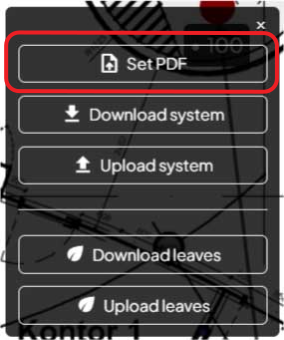When the PDF is loaded you should set the drawing scale so lengths are calculated correctly
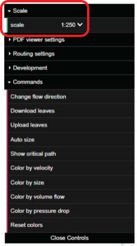Navigation
Pan
Click and hold left mouse button while moving the mouse
Zoom
Use the +/- buttons to zoom in/out
Zoom
Click this button to zoom to the original size of the PDF

Zoom
When the drawing contains compoentns, use this button to zoom to fit these in the view
Terminology
System structure
A system always consists of one root and one or more leaves if we compare it to a tree.
System structure
In a supply system the root is the source from which the fluid flows.
In a return system the root is the sink to which the fluid flows.
Nodes
In graph terminology, each point in the tree is called a node.
The nodes of particulat interest from a flow perspective are of course the root and leaf and then those of the sub-nodes where the flow is divided into several branches.
Edges
In graph terminology, the connection between two nodes is called an edge.
The edges are directed meaning that they always go from one node to another.
The drection is indicated by an arrow.
Start drawing
Draw mode
You can only draw when draw mode is enabled.
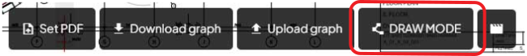Draw mode
When draw mode is enabled the button changes color.
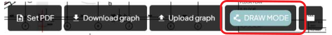When starting a new tree you first need to place the root.
Click where you wish to place the root (typically in a shaft or plant room).
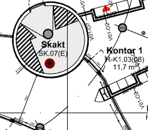You will now see that an edge is being dragged as you move the mouse.
Click to lock the position of the edge by placing a new node.
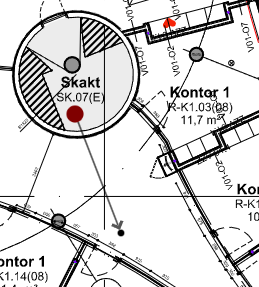You can now place a new node and thereby continue the path.
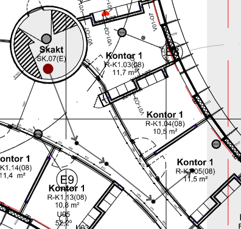When you have drawn a full path from root to leaf click Esc.
The last drawn node now changes to green color to indicate that it is a leaf.
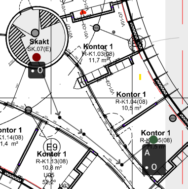You can click any node or edge in the path to continue drawing the tree.
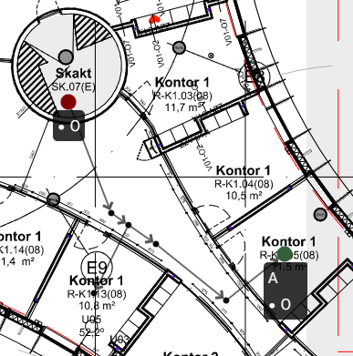Bonus tip
Click and hold the Shift key to draw orthogonal edges.
Delete node
Click and hold a node to bring up a context menu that lets you delete the node.
You are only allowed to delete leaves and sub-nodes that do not divide the flow.
Set flows and labels
Set the flow of a node by clicking and editing the value shown on the label.
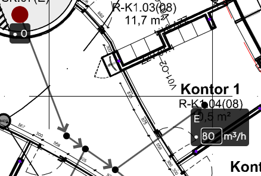The total flow is automatically updated to include the typed value.
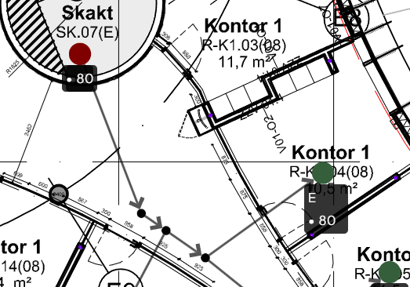You can use the same approach to change the label of the leaf.
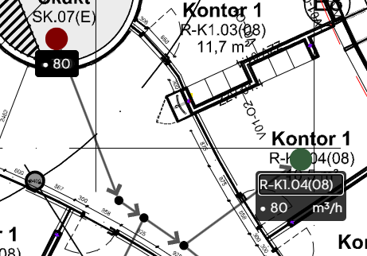When using proper names for labels you can set up a work flow where flows are handled externally in a spreadsheet.
Click Download leaves in the File dialog to download a CSV file with all the leaves and their label/flow.
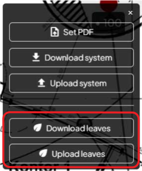When you have made corrections to the labels/flows, save the CSV file and upload it again by clicking Upload leaves.

All labels are automatically updated to match the new flows and the total flow is updated at the root.
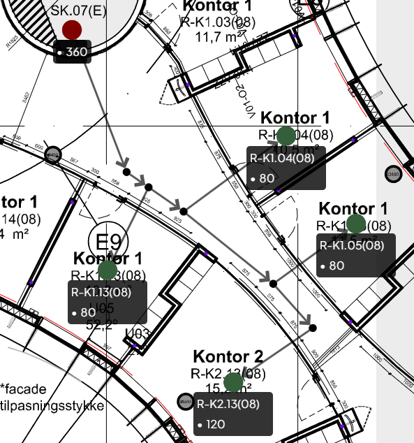Inherit text from PDF
If the PDF underlay has room numbers, wouldn't it be great if you could just copy the text from there to your nodes? Well, you can!
The example below uses a very simple space naming that is simply a double-digit number (01, 02, 03, 04).
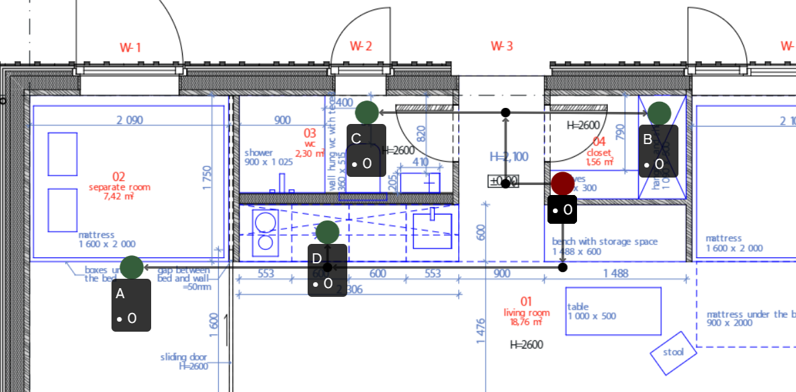Click the "PDF Label copy" command to bring up the menu for text copying.
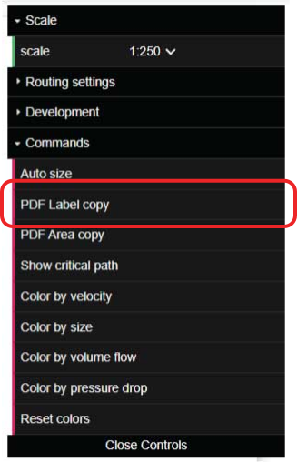If the PDF has no text, we will se a message saying "PDF contains 0 text partitions". In this case it doesn't make use to use the tool.
Perhaps you can get a PDF that does contain text?
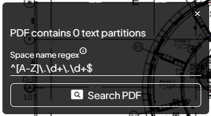We specify the regex ^\d{2}$, click the "Search PDF" button and immidiately we see the matched text partitions marked with transparent orange nodes.
^ and $ refer to start and end of string respectively and \d{2} means exactly 2 digits.
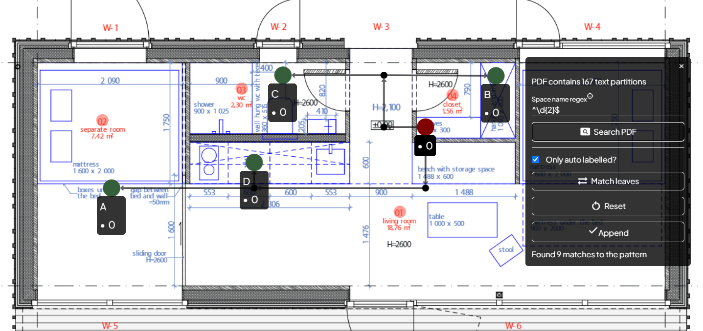Regular expressions
Regexes are super powerful for pattern matching in a string but they can be hard to write. Fortunately ChatGPT or Bard can help you out! Try yourself with a prompt like this: "Build me a regex that matches the following pattern [any uppercase character], [.], [some integers of arbitrary length], [.], [some integers of arbitrary length] Example: E.02.12"
See Bard's result on next slide.
If you click "Match leaves" you will see arrows from each leaf in the tree to the nearest label found in the PDF. The default setting ensures that matches are only appended if the label is an auto generated one and not one that you have typed. You can set it to apply all matches.
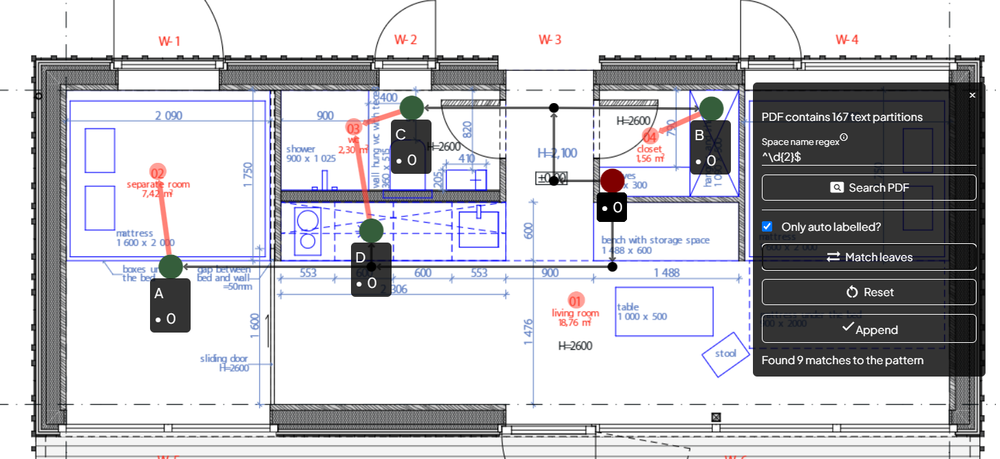Edit match
You can change a match by clicking the edge. This allows you to match it with another node. Clicking the "delete" key will simply remove it.
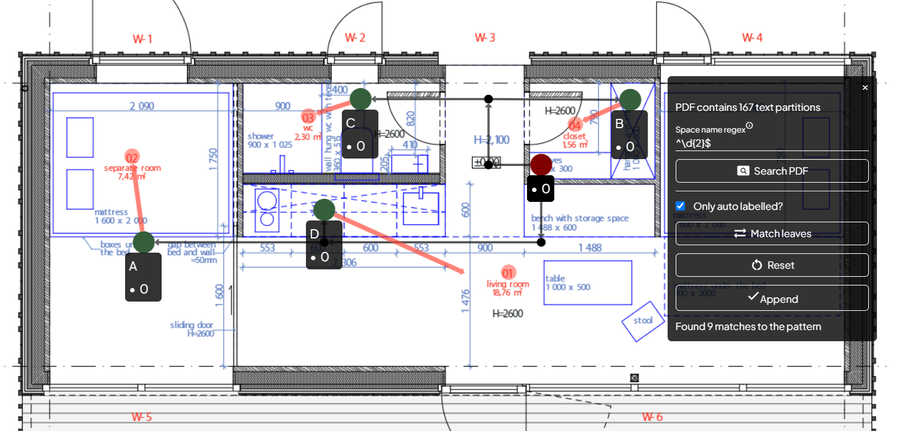Apply
When you are happy about the mapping, click "Append" to copy over the text values from the PDF.
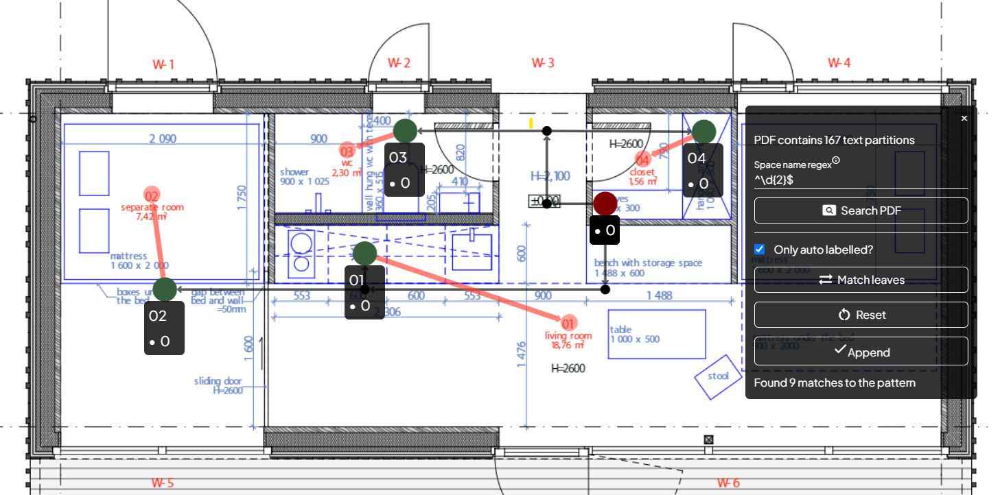Areas
Often areas are also stated, and therefore, there is a specific method for copying these over.
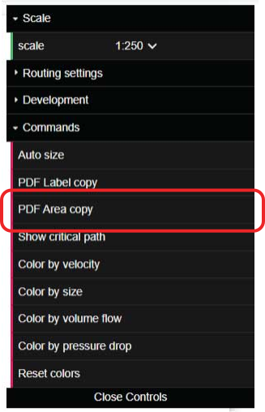Areas
In the specific drawing the value and unit for the areas are not in the same text partition, so we find them by the simple regex \d+\,\d+.
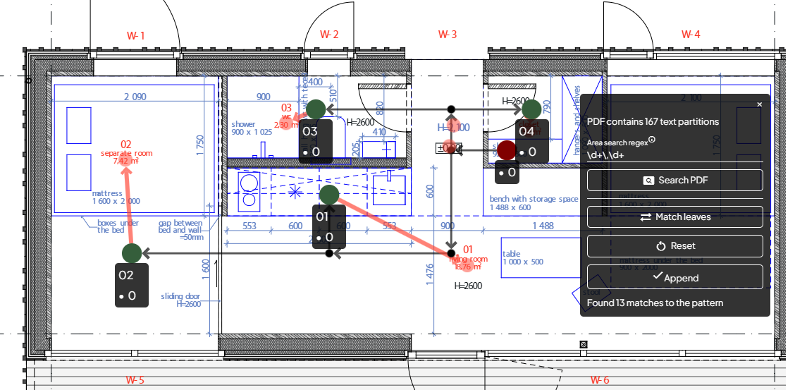Areas
The areas are not directly visible in the leaf node labels but can be found under Node info in the leaf context menu (click and hold node to bring up the menu).
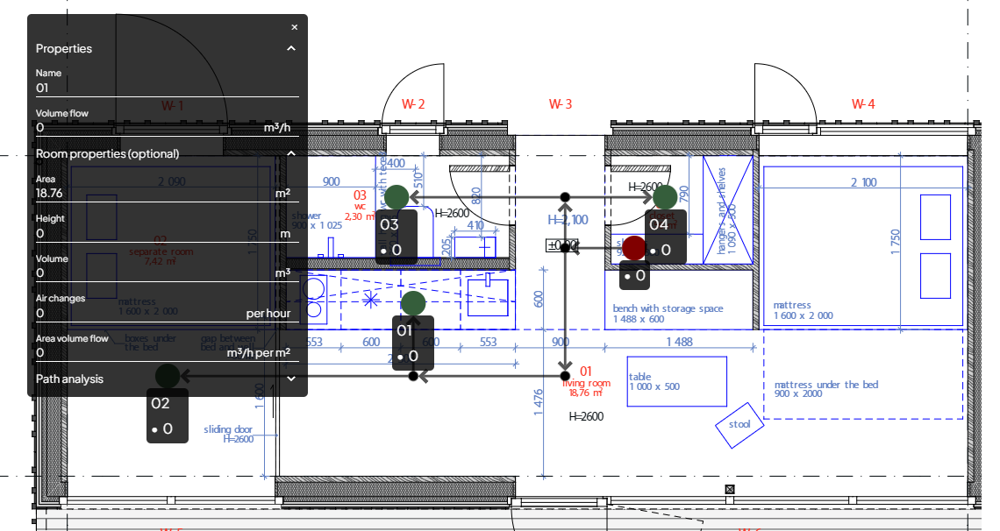Calculations
In the previous section you saw that the total flow is calculated at the root. Actually the flow is aggregated anywhere in the tree from leaves further out in the tree.
Velocity
Knowing the flow anywhere in the tree means that adding segment size to the pipe/duct represented by an edge will allow us to calculate cross sectional area and hence the velocity.
Per default all segments are Ø200, but this can be changed.
Segment size
You will notice that hovering an edge wil bring up a tooltip with the segment size.
Clicking the tooltip brings up the segment size selector.

Segment size
In the segment size selector you can select any size that is available in the segment-series that is available for the system type.
The selector also includes an intelligent selector that simply takes the next available size that is either larger or smaller than the current.
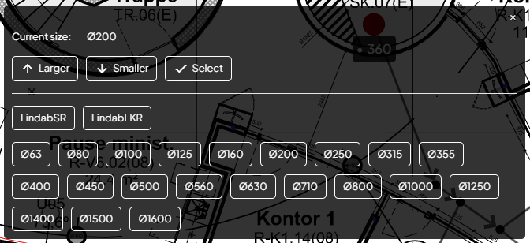Sizing settings
The size selector tries to stay in the same segment-series as long as its size complies with the mximum allowed height.
The maximum allowed height is specified in the Sizing settings which is found under Routing settings in the menu.
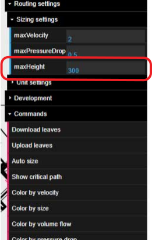Auto sizing
You will notice that the Sizing settings also lets you specify maximum velocity and pressure drop.
This brings us to another way to set sizes of the segments, which is the Auto size function. Try clicking the button and you will see that sizes are automatically set.
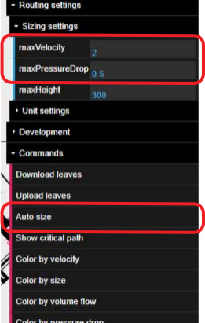Insights
After using the auto resize it is useful to apply the Color by size filter to visually inspect the aplied sizes that were chosen.
With this filter, the ducts are show in atual size.
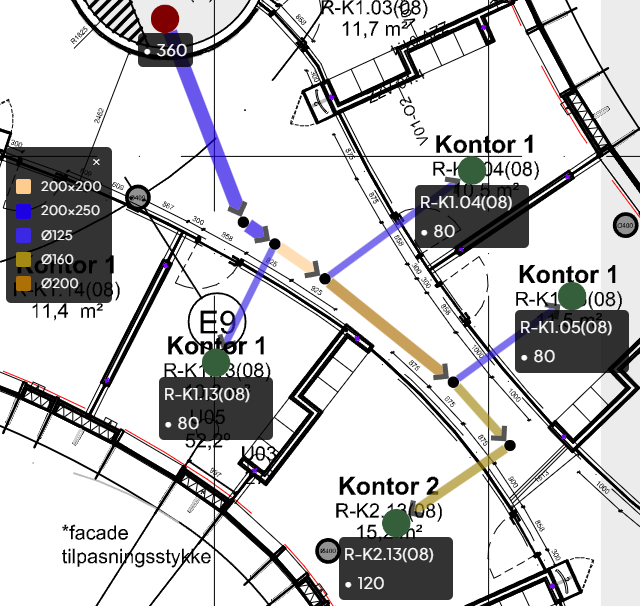Color by volume flow
You can also apply a Color by volume flow filter which reveals how the flow is aggregated down the tree.
You will see that hovering an edge now shows the volume flow in the segment along with its size.
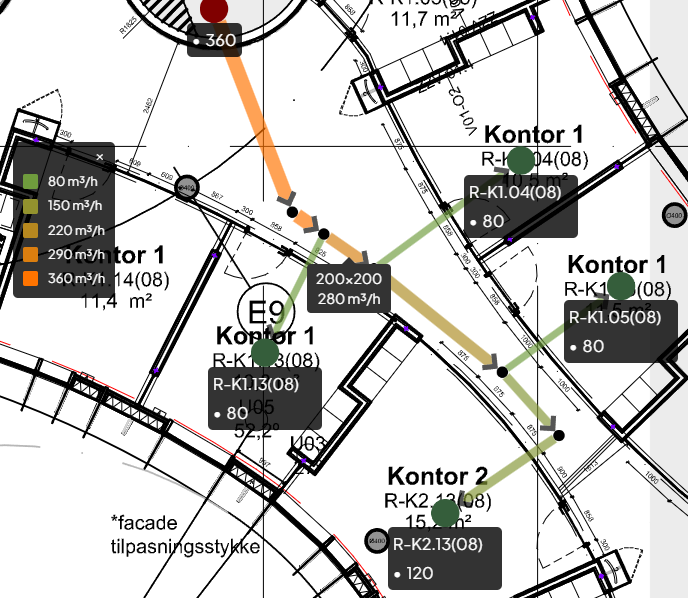Color by velocity
The Color by velocity filter shows the calculated velocity.
Hovering an edge now shows the velocity in that specific segment.
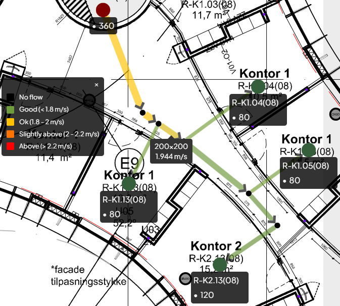Color by pressure drop
The Color by pressure drop filter shows the friction pressure drop per meter in each segment.
These are calculated using the Colebrook-White Equation. Segment roughness depends on the selected segment-series.
NB! currently all calculations are for air at 20 degC.
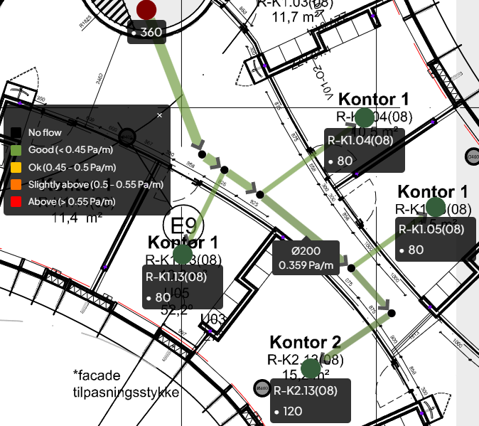Critical path
The app also allows you to visualize the critical path. This is calculated using an A* algorithm that starts at the root and uses the total segment pressure drop as edge weight.
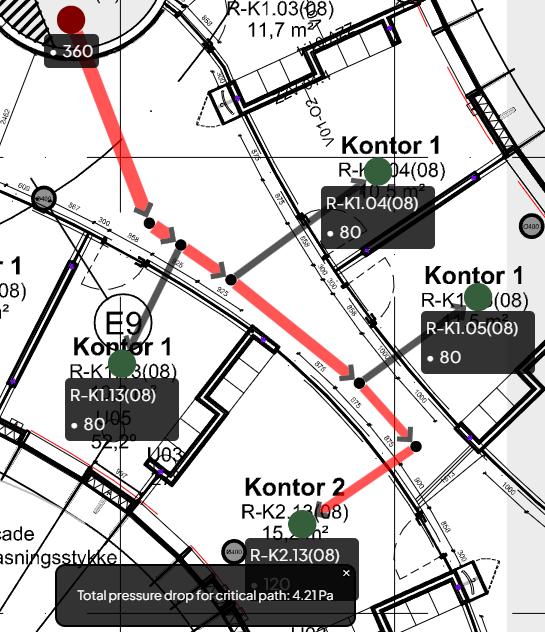Units
Units can be changed under Routing settings -> Unit settings
Export to Excel
You can export any segment path to Excel. Simply click the node from where the path should start and click Node info.
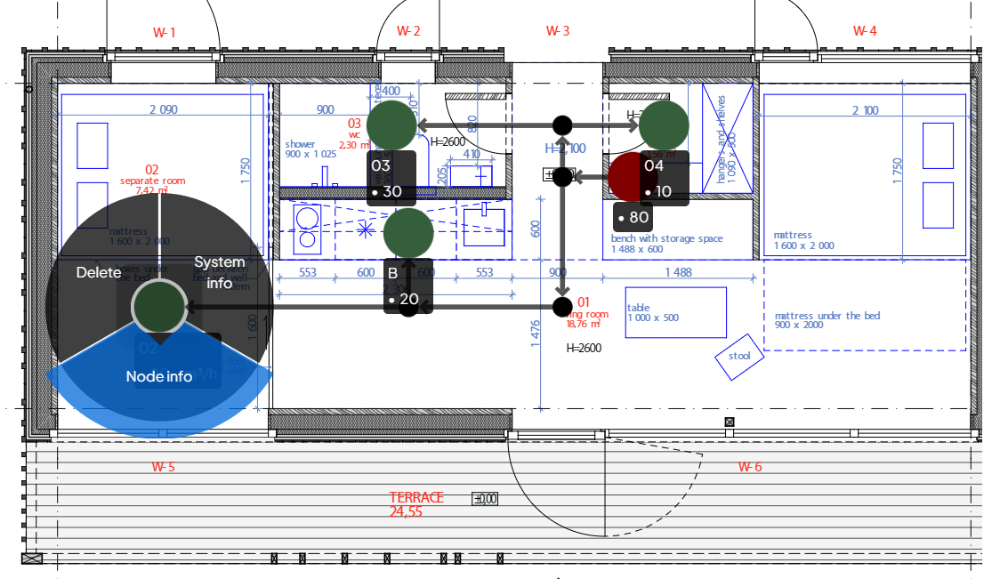Export to Excel
Under the Path analysis section click Shortest path to root and you will see the path + details in the window. Now click Download path data.
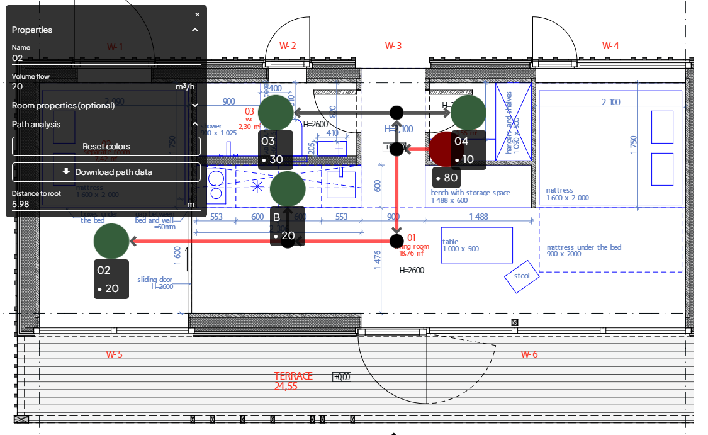Export to Excel
If we open the CSV file in excel we see all the segments including all the calculated values.
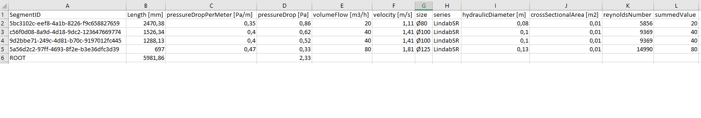Organizing files
In the current version, the app only suports one underlay and one system. This might change in future versions, but the current focus is to prioritize enhancement for a single system.
To save your work with a system, click the Download system button and save the file to your project folder.
Recommended system naming could be something like "{planName}-{systemName}-{version}.json"
If you wish to use a system as the basis for another one (for example design return system from flow system) it can be handy to use the Change flow direction command. This simply does what it says.
Backlog
The following enhancements are prioritized for now:
- Proper edge details display
- Continuity factor